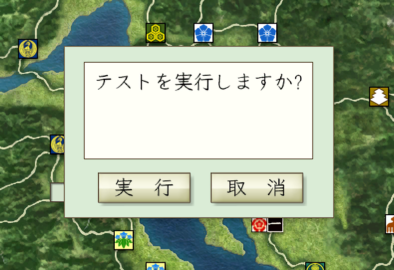

情報ダイアログや、確認ダイアログ、実行・取消の選択ダイアログなど ダイアログ系のAPI提供用オブジェクトとなります。

天翔記には元来存在しない独自のゲームタイミングで、 ユーザーに情報を提供したり、実行の取捨選択を促す場合などに利用します。
void 天翔記クラス::On_戦略_軍団ターン変更時(int 軍団番号) { ダイアログ->Show_確認_中央("確認中央"); ダイアログ->Show_確認_下部("確認下部"); int 選択結果 = ダイアログ->Show_実行か取消_中央("テストを実行しますか?"); if (選択結果 == 列挙::ダイアログ::実行か取消::実行) { ダイアログ->Show_情報_中央("実行を選択しました"); } else { ダイアログ->Show_情報_中央("取消を選択しました"); } }
ダイアログに関する主な所は以上となります。 詳細は「ダイアログ.h」や「ダイアログ列挙.h」を参照してください。